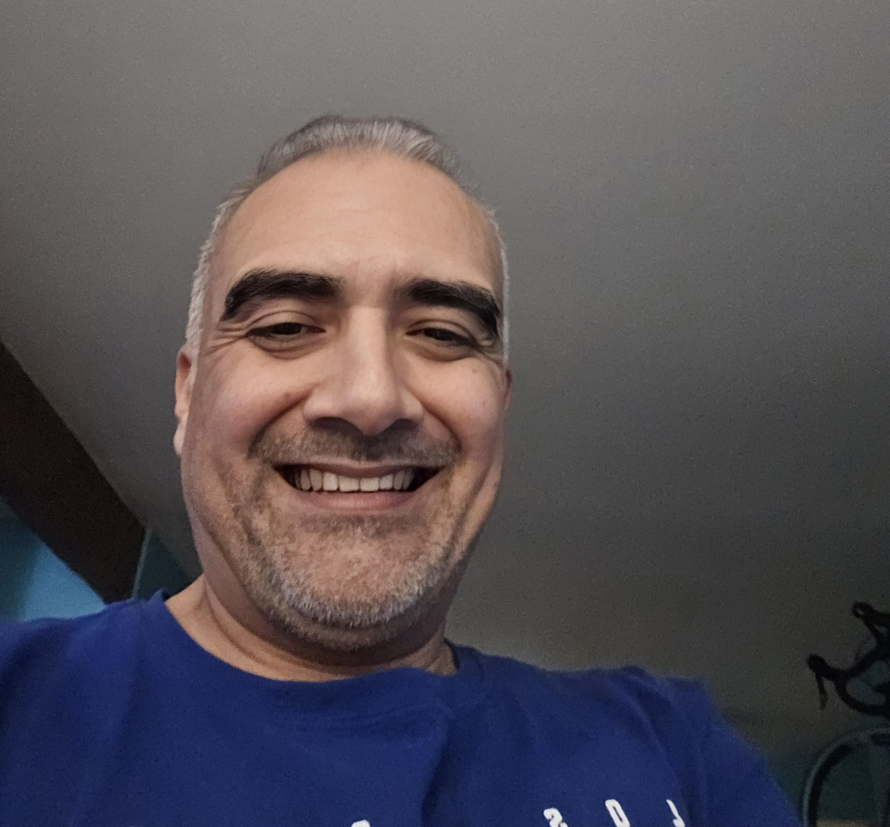

Rico
Rico brings a gambler’s instinct, a strategist’s brain, and a fan’s heart to The Rookie And The Vet Podcast. Known for spotting momentum shifts before they happen, he digs into the stories behind the stats — the grit, the psychology, the chaos — to reveal why the “long shots” are often the smartest plays. If you love bold takes, sharp breakdowns, and rooting for the underdog, you’re in the right place.